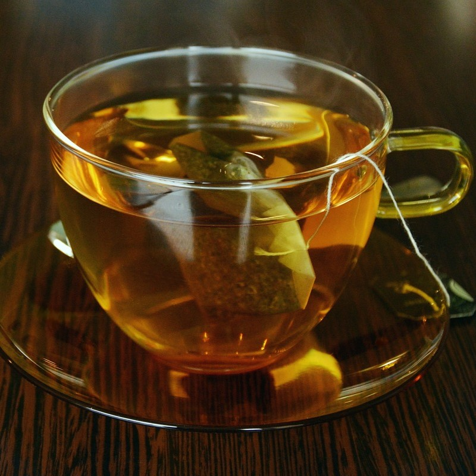
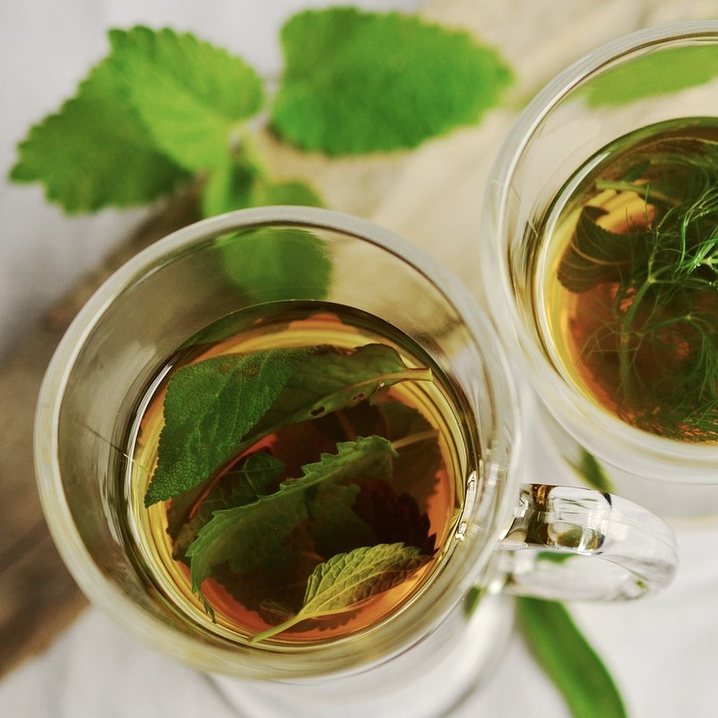
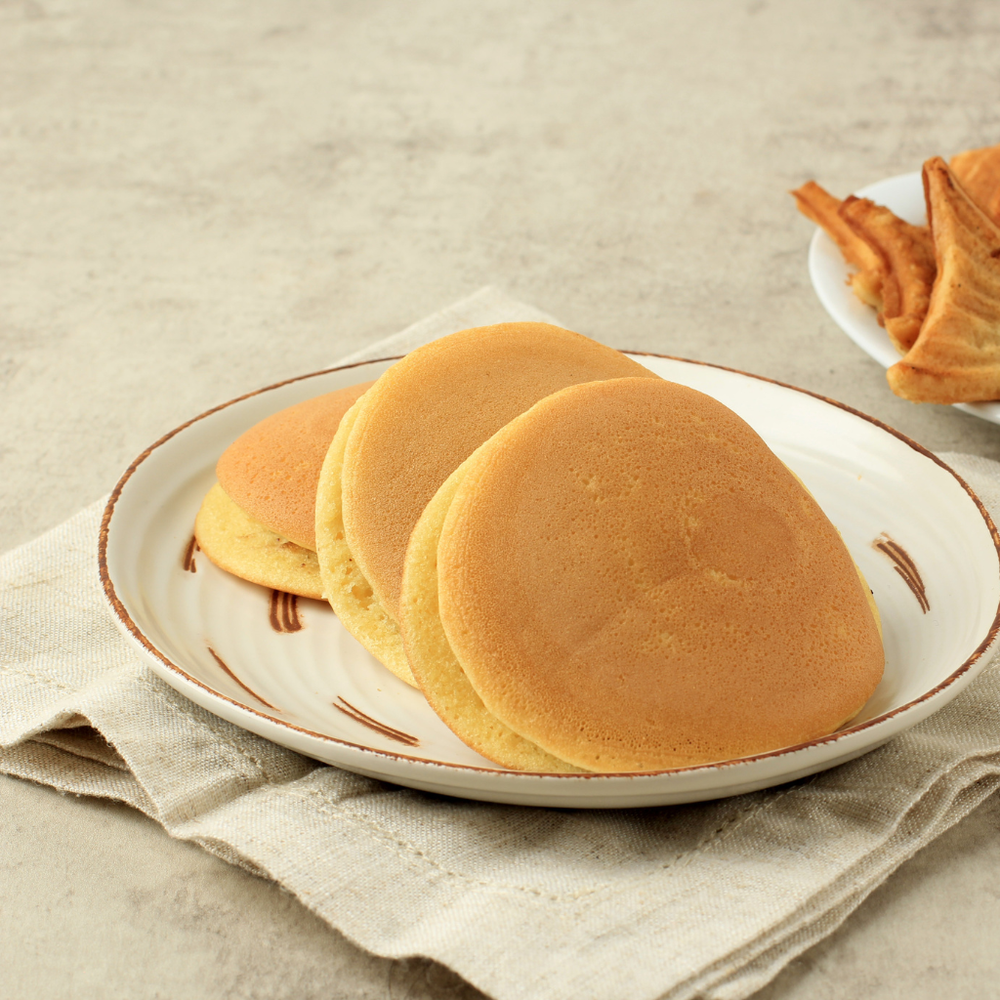
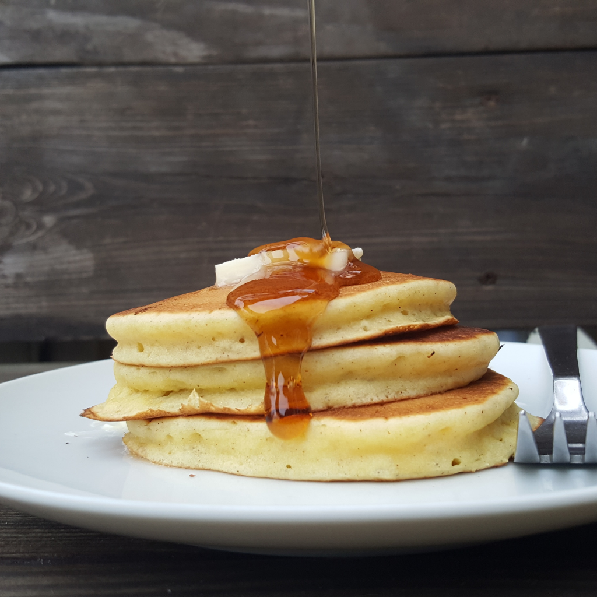
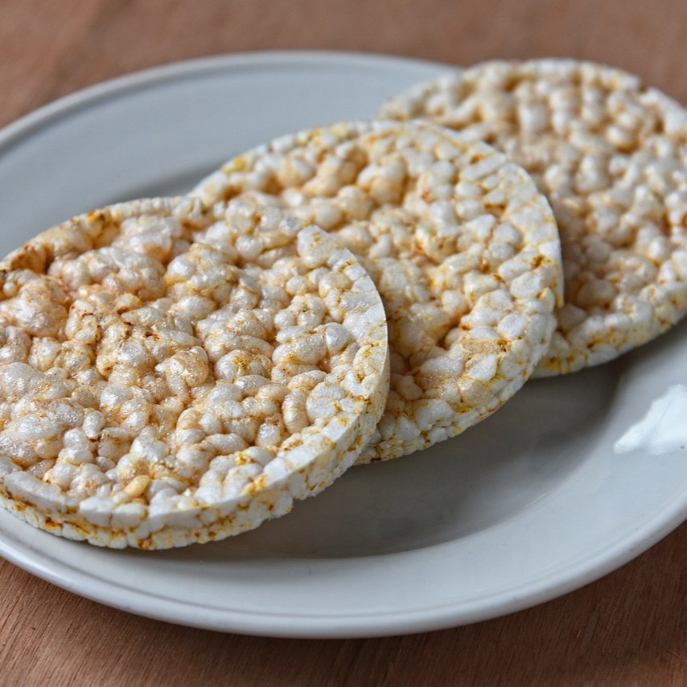
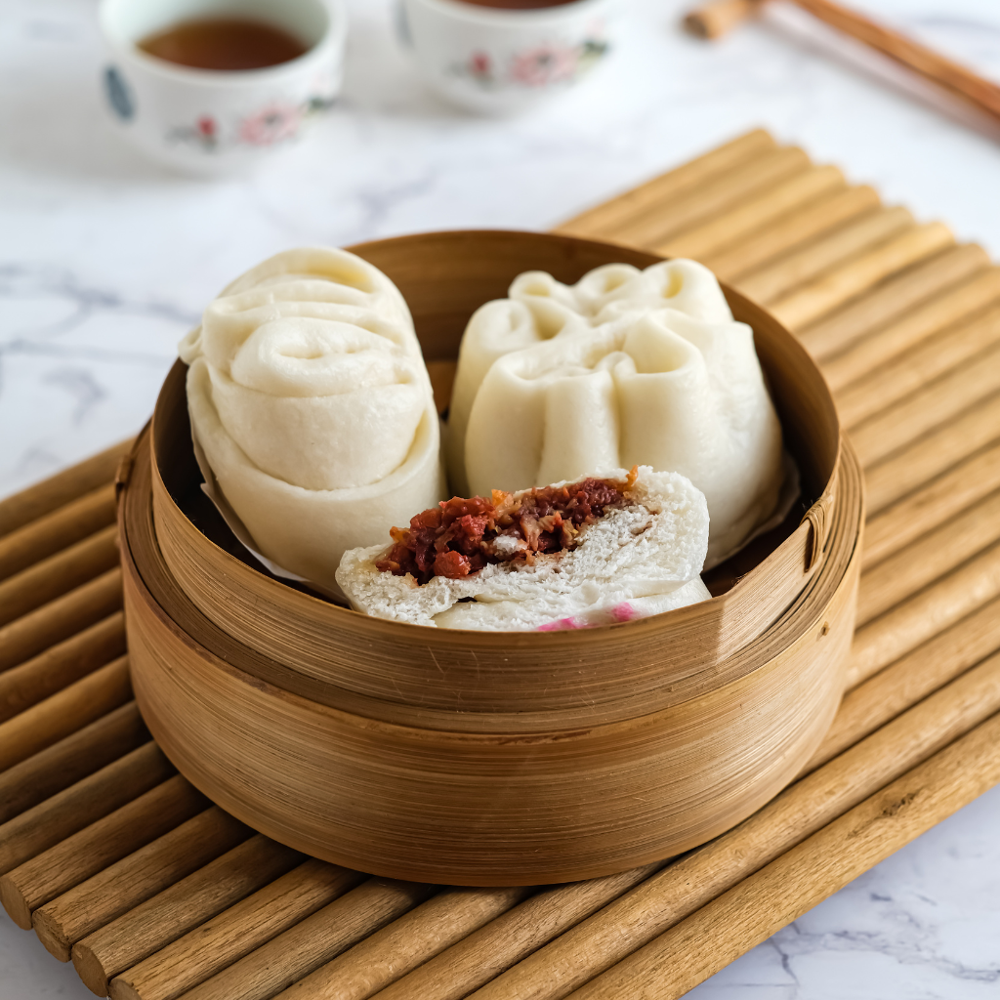
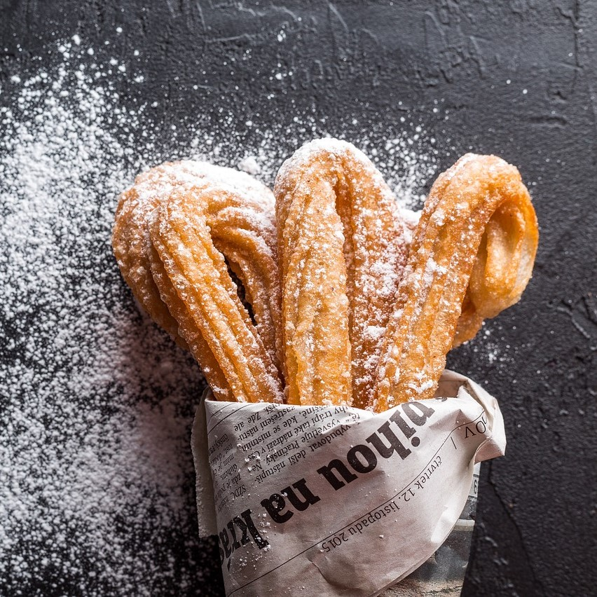
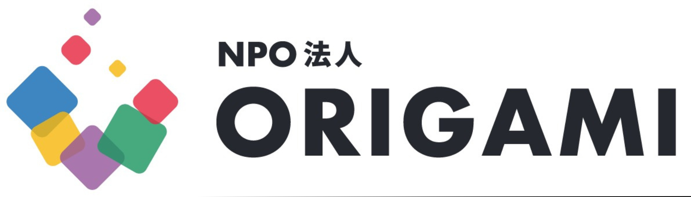

お茶カフェ
あなたの好きなお茶はどれ？
~若者の急須を使う文化と、上野に来るきっかけ作りを~
想い
若者が急須で淹れたお茶を飲まないという現状がある。
そのため、「ここに来れば美味しいお茶が飲める」ということを感じてもらい、
おりがみのメンバーをはじめとし、継続しながらおりがみ以外の若者にも広げていき、
急須で淹れたお茶を楽しみながら若者が交流できる場所を作りたい。
若者の急須を使う文化と、上野に来るきっかけ作りに繋げていきたい。
「お茶カフェ」について
「お茶カフェ」は、"NPO法人おりがみ"と"茶の君野園"の共同で開催する、1日限りのお茶のイベントです。
当日は数種類のお茶の飲み比べをはじめ、急須体験やお茶に合うお菓子の試食をすることができます。
お茶カフェ自体は基本的に無料で、営業時間内であれば誰でもお気軽にご参加いただくことができます。
基本的に大学生が主体で企画しており、当日も大学生がご案内いたします。
お茶が好きな方、お茶について知りたい方、お茶に興味がある方は特に楽しめるイベントとなっています。
皆様のご来店を心よりお待ちしております。
- 料金
- 無料
- 場所
- 君野園
- 開店時間
- 3月16日
13時~17時
(1日限り)
- できること
- お茶飲み比べ
急須体験
茶菓子の試食など
- 対象
- 誰でもOK
メニュー
お茶（全7種）
-

- 八女茶
- エスプレッソとミルク、この組み合わせに勝てるものはなかなか見つかりません。ホッとしたいとき、やっぱりラテが欲しくなる
ICE
-

- 狭山茶
- コーヒーに合うお菓子を追及して生まれた当店の大人気メニュー。数量・季節ともに限定のため、見つけたらぜひお試しを。
HOT
-

- 掛川茶
- 浅煎りの豆をこだわりの配合でブレンドした、スッキリと爽やかな飲み口の当店看板メニュー。ホットでもアイスでも。
HOT
-

- 烏龍茶
- 瀬戸内海に浮かぶ小島で、オーナー自らが栽培したとっておきのレモンを、たっぷりと使った自慢のレモネードです
ICE
-
- 抹茶
- ちょっと小腹が空いたとき、あると嬉しいホットドッグ。特製チリソースとチーズをかければ、もう言葉はいりません。
HOT
-
- ほうじ茶
- ちょっと小腹が空いたとき、あると嬉しいホットドッグ。特製チリソースとチーズをかければ、もう言葉はいりません。
ICE
-
- 掛川茶
- 浅煎りの豆をこだわりの配合でブレンドした、スッキリと爽やかな飲み口の当店看板メニュー。ホットでもアイスでも。
ICE
茶菓子（全5種）
-

- どらやき
- ちょっと小腹が空いたとき、あると嬉しいホットドッグ。特製チリソースとチーズをかければ、もう言葉はいりません。
-

- パンダ・ひよこの大判焼き
- 浅煎りの豆をこだわりの配合でブレンドした、スッキリと爽やかな飲み口の当店看板メニュー。ホットでもアイスでも。
-

- せんべい
- エスプレッソとミルク、この組み合わせに勝てるものはなかなか見つかりません。ホッとしたいとき、やっぱりラテが欲しくなる
-

- 饅頭
- コーヒーに合うお菓子を追及して生まれた当店の大人気メニュー。数量・季節ともに限定のため、見つけたらぜひお試しを。
-

- 最中
- 瀬戸内海に浮かぶ小島で、オーナー自らが栽培したとっておきのレモンを、たっぷりと使った自慢のレモネードです
運営元紹介
-
NPO法人おりがみ
 NPO法人おりがみのHPへ -
茶の君野園
茶の君野園のHPへ
Q&A
- 本当に無料なんですか？
- はい！「お茶カフェ」で提供されるお茶やお菓子を含めたサービスは全て無料です！
- 場所はどこですか？
- 上野のアメ横にある「君野園」という名前のお店です！このQ&Aの下にマップがありますので、詳しい場所はそちらをご覧ください！
- 一人で行っても大丈夫ですか？
- もちろん大丈夫です！お一人でも複数人でもぜひお気軽にご来店ください！
- 1日しかやってないんですか？
- はい、この企画は3月16日のみの開催となっております。ですので、お時間のある方は是非一度覗いていってください！
- 次回の開催はいつですか？
- 次回の開催はまだ未定となっております。
しかし、来年に次回の開催を予定しておりますので、告知をお待ちください。
- バナナはおやつに入りますか？
- もちろん入ります。むしろ、食べてください。バナナは栄養価の観点では実に優れた食べ物であるため、1日に平均12本食べることをおすすめいたします。
- カレー屋さんのナンはナンなんですか？
- そうです。ナンなんです。ﾅｰｰｰｰｰｰｰｰｰｰｰｰｰｰｰｰｰｰｰｰｰｰｰｰｰｰｰｰｰｰｰｰｰｰｰｰｰｰｰｰｰｰｰｰｰｰｰｰｰｰｰｰｰｰｰｰｰｰｰｰｰｰｰｰｰｰｰｰｰｰｰｰｰｰﾝ
- この企画は誰が運営しているんですか？
- この「お茶カフェ」はNPO法人おりがみと茶の君野園の共同で運営しております。